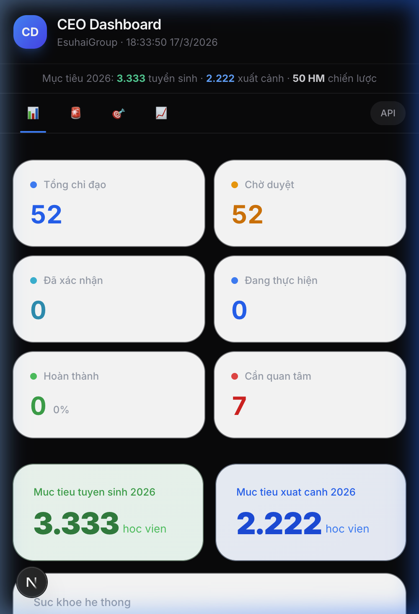
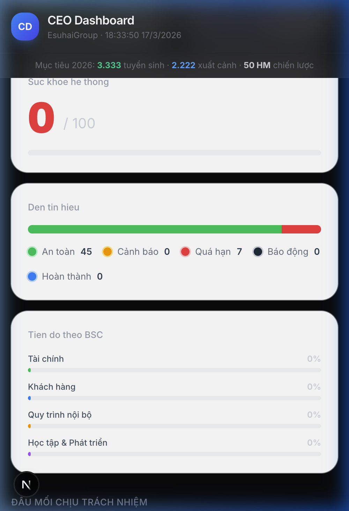
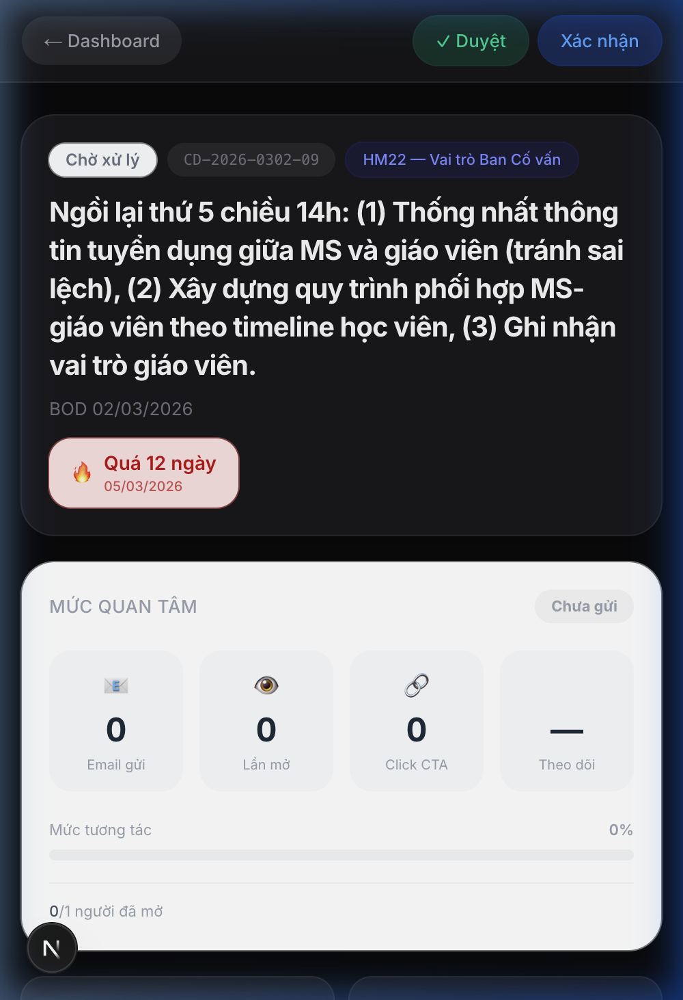
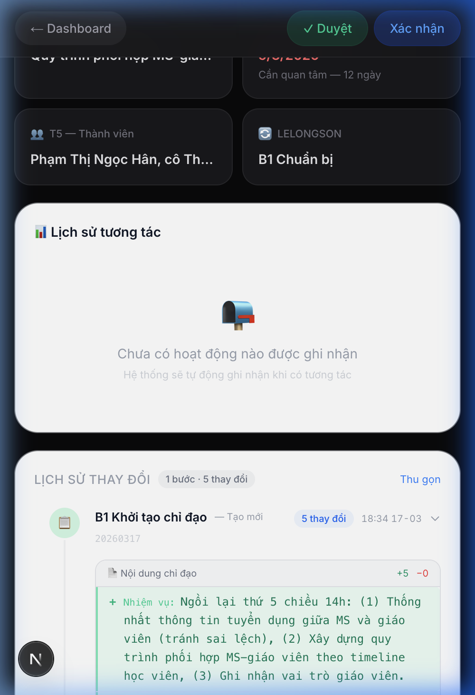

Hệ thống CEO Directive Automation là công cụ quản trị điều hành dành cho Ban Giám đốc EsuhaiGroup, giúp chuyển hóa chỉ đạo từ lời nói thành hành động có theo dõi. Thay vì chỉ đạo qua email rồi "rơi vào quên lãng", hệ thống đảm bảo mỗi chỉ đạo được:
| Vấn đề trước đây | Giải pháp Dashboard mang lại |
|---|---|
| Chỉ đạo gửi email → không biết đầu mối có đọc không | Tracking pixel tự động ghi nhận: ai mở, bao nhiêu lần, lúc nào |
| Nội dung chỉ đạo thay đổi nhiều lần → mất dấu phiên bản | Diff View kiểu GitHub — mỗi thay đổi là 1 "commit", CEO thấy rõ bản cũ → bản mới |
| Đầu mối không phản hồi → CEO không biết có cần can thiệp | Chỉ số "Mức quan tâm" — tự động tính từ hành vi mở email, click xác nhận |
| Báo cáo tiến độ phụ thuộc đầu mối tự viết → thiếu khách quan | Dữ liệu hành vi khách quan: metadata email, IP, thời điểm — không phụ thuộc báo cáo tay |
| 52 chỉ đạo cùng lúc → khó biết cái nào "trôi" | Bảng tổng hợp phân loại theo mức độ: Cần quan tâm, Đang thực hiện, Hoàn thành |
Triết lý Cố vấn Đồng hành: Hệ thống không nhắc nhở, không truy vấn. Hệ thống nhận diện tín hiệu qua hành vi — để người quản lý có thông tin đúng lúc, ra quyết định đúng thời điểm.
| # | Tính năng | Giá trị cho CEO |
|---|---|---|
| 1 | Theo dõi email tự động | Biết đầu mối có mở email chỉ đạo không — không cần hỏi |
| 2 | Bảng Mức quan tâm | 4 con số lớn: Email gửi, Lần mở, Click xác nhận, Thời gian theo dõi — CEO nhìn 3 giây hiểu |
| 3 | Dòng thời gian tương tác | Lịch sử mọi hành động theo ngày — giống GitHub commit log |
| 4 | Lịch sử thay đổi nội dung | Mỗi thay đổi nội dung chỉ đạo hiển thị đỏ (xóa) / xanh (thêm) — thấy rõ trước → sau |
Dashboard được thiết kế mobile-first — CEO có thể kiểm tra trên điện thoại bất cứ lúc nào:




Khi nội dung chỉ đạo được cập nhật (VD: gia hạn thời gian, thêm thành viên), hệ thống tự động ghi lại và hiển thị:
Mỗi cập nhật = 1 bản ghi trong dòng thời gian. CEO thấy rõ ai đã sửa gì, khi nào — không phụ thuộc báo cáo miệng.
| Hạng mục | Giới hạn | Ảnh hưởng |
|---|---|---|
| Email tracking | Chỉ biết "mở / chưa mở" — không đo thời gian đọc. Apple Mail proxy có thể tạo false positive (~15%) | Thấp — đủ nhận diện xu hướng quan tâm của đầu mối |
| Lịch sử thay đổi | Chỉ có diff khi chỉ đạo đã trải qua ít nhất 1 lần cập nhật. Chỉ đạo mới tạo → chưa có diff | Thấp — dữ liệu tự tích lũy theo thời gian |
| Giao diện | Trang chi tiết dùng dark theme, dashboard chính dùng light theme — chưa đồng nhất 100% | Trung bình — cần quyết định thống nhất |
| Dữ liệu tracking | Hiện chưa có email nào được gửi kèm tracking pixel → chỉ số tracking đang = 0 | Cần 1 lần gửi email thực tế để kích hoạt dữ liệu |
Phần này chứa thông tin kỹ thuật chi tiết. CEO có thể bỏ qua.
| Phase | Mô tả | File | Trạng thái |
|---|---|---|---|
| 1 | Tracking Pixel API | /api/track/[token]/route.ts | ✅ Mới |
| 2 | Engagement Stats Hero Panel | engagement-stats.tsx | ✅ Mới |
| 3 | Timeline GitHub-style | engagement-activity.tsx | ✅ Viết lại |
| 4 | Diff / TrackChange View | diff-timeline.tsx | ✅ Mới |
| 5 | Tổ hợp directive detail page | directive/[id]/page.tsx | ✅ Viết lại |
| — | Supabase helper functions | lib/supabase.ts | ✅ Bổ sung |
| Bước | Chi tiết |
|---|---|
| 1. Token | Base64url encode: directiveId + email + timestamp |
| 2. Pixel | Ẩn trong email dưới dạng <img> 1×1 trong suốt |
| 3. Detect | Phân biệt người thật vs bot (Apple Mail proxy, Google Cache, Outlook SafeLink) |
| 4. Ghi DB | Insert engagement_events: IP, User Agent, bot flag, timestamp |
| 5. Fire-and-forget | Trả pixel ngay, ghi DB nền — không block email rendering |
Task doc: docs/tasks/claudecode-content-bible-fix.md
| # | Nhiệm vụ | Scope |
|---|---|---|
| 1 | Fix từ cấm Content Bible trong backend | 10+ files: telegram-bot, auto-escalation, ai-analyzer, signal-bot... |
| 2 | Mở rộng DB engagement_events CHECK constraint | Supabase migration: thêm event types mới |
| File | Nội dung | Điểm adapt |
|---|---|---|
docs/commit-rule.md | Commit format TRƯỚC/SAU tiếng Việt | Thêm label [CONTENT], [TRACKING] |
docs/report-rule.md | Báo cáo SELF × Cố vấn Đồng hành | Content Bible, CSS template, checklist QC |